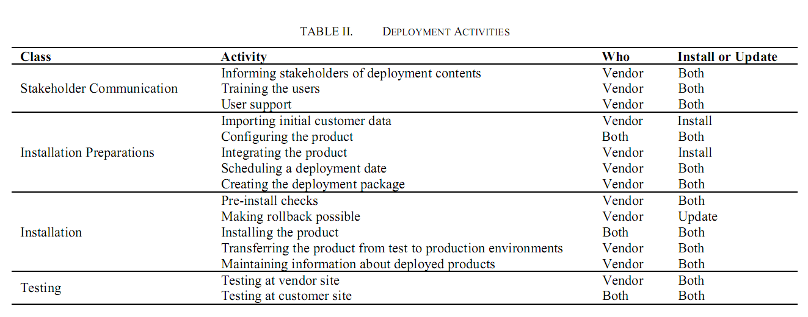

What's in this paper
• Deployment activities of four case companies are classified (see table above)
• Main causes of deployment challenges are: 1) Tight and complex integrations, 2) Numerous configuration options, 3) Need for large pre-created data-model
Abstract
Software deployment, including both clean installs and updates, is a crucial activity for all software vendors. It starts with a customer’s order of a new release and incorporates all steps taken until the customer is satisfied with the deployed product. Using interviews as the main data collection method, we conducted a case study of four companies to discover their software deployment activities and challenges. The studied products were more complicated than pure COTS products. We noticed three product characteristics that make deployment more challenging: 1) the product is tightly integrated to other customer systems, 2) the product offers various configuration options to support different ways of working, and 3) the product requires a pre-created, complex, real-world data model to be usable. We also noticed
that software deployment is multifaceted, involving activities related to customer interaction; making integrations; and configuring, installing and testing the products.
Ref
Mäntylä M. V. and Vanhanen J., "Software Deployment Activities and Challenges – An Industrial Case Study of Four Software Product Companies", in Proceedings of the 16th European Conference on Software Maintenance and Reengineering, (CSMR), 131 - 140, 2011,
{kind=link}